图解CSS: Grid布局（Part4）
作者：大漠 日期：2021-05-12 点击：471
特别声明：如果您喜欢小站的内容，可以点击申请会员进行全站阅读。如果您对付费阅读有任何建议或想法，欢迎发送邮件至: airenliao@gmail.com!或添加QQ：874472854(^_^)
* 文本为付费内容（4.99元），您已获得全文阅读权限
在“图解CSS：Grid布局” 系列 的第三部分 主要探讨了，在 grid-template-columns 和 grid-template-rows 中使用长度值来设置网格轨道尺寸大小。这里长度值指的是使用不同单位（比如，px，%，em，rem和vw等）值，并且花了较长的篇幅和大家探讨了 fr （弹性系数，又称<flex>系数）给网格轨道尺寸带来的变化以及 fr 在网格轨道中是怎么计算的。不过，在网格布局中，除了使用上一章节中用的带有不同单位的长度值之外，还可以使用一些关键词，比如接下来要介绍的 none 和 auto（我们熟悉的），min-content、max-content、fit-content 等关键词以及fit-content()函数。阅读完这篇文章之后，你就能了解这些关键词是如何帮助我们来设置网格轨道尺寸。感兴趣的同学请继续往下阅读。
none
关键词none 是 grid-template-columns 和 grid-template-rows 属性的默认值。如果这两个属性的值设置为 none 时，意味着 没有显式网格轨道。如果网格轨道中任何网格项目，仍然会得到隐式网格轨道。比如下面这个示例：
.container {
display: grid;
grid-template-columns: 1fr 1fr;
grid-template-rows: none;
grid-auto-rows: 1fr;
}
这个示例 grid-template-rows 属性显式设置了 none 值，创建隐式的行，但是由于网格容器中有四个网格项目，因此会有两个隐式的行。另外，使用grid-auto-rows 属性定义了隐式行大小（行高）。
none还起着另一个作用。如果你希望重置或覆盖之前定义的网格时，就可以使用该值。
注意，在没有显式网格的情况下，任何行（或列）都将隐式生成，它们的大小将由
grid-auto-rows和grid-auto-columns属性决定。比如示例中的grid-auto-rows就设置了值为1fr。
auto
auto是自动的意思，指的是 网格项目内容的大小。将一列设置为auto时，意味着将其设置为其网格项目的宽度；将一行设置为auto时，意味着将其设置为其网格项目的高度。比如下面这个示例：
.container {
display: grid;
grid-template-columns: auto auto auto;
gap: 5px;
}
上面示例，grid-template-columns设置的值为auto auto auto，表示三列网格轨道宽度都是auto，第一个网格项目和第三个网格项目的内容都是文本，只是内容长度不一样，第二个网格项目的内容是一张图片。此时，第一列和第三列的列宽是文本内容长度对应的宽度，第二列是图片宽度：
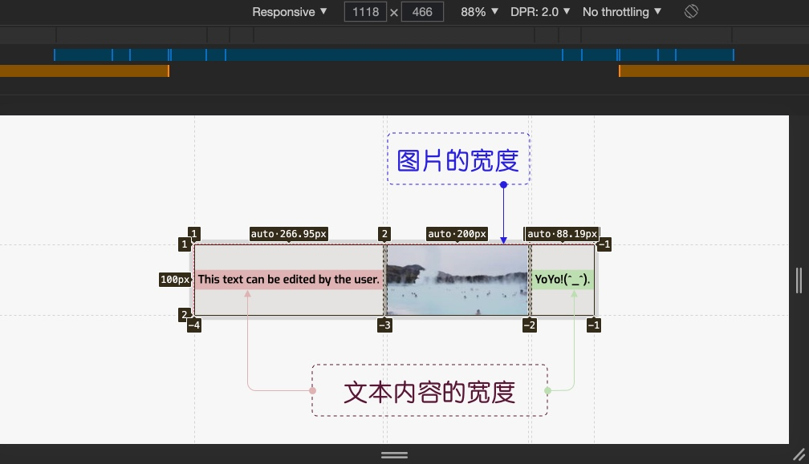
为了更好的向大家展示auto给网格轨道带来的变化，示例中的第一个网格项目设置了contenteditable="true"，你可以在直接在第一个网格项目中编辑文本内容。当你输入任意内容时，你会看到第一列网格轨道的大小也会随之发生变化，以匹配文本的宽度：
正如上面视频展示的效果所示，设置为auto的列，只有在有空间的情况下才会有完整的文本尺寸（所在行所有文本宽度总和）。否则，它将导致文本换行。
如果你阅读《CSS中 auto 值你知多少》一文的话，会发现：
关键词
auto在整个CSS中可以有不同的含义（运用在不同的CSS属性中，代表的含义和所起的作用不同）。
例如，块级元素 width取值auto时，表示占用块元素所有可用的宽度，而在内联级元素中，它只占用内容所需的空间。这样一描述的话，你是不是已经感觉到了，在网格布局中，网格轨道取值为auto时，渲染的行为类似于行内元素，它将占用内容的空间。不过，在网格轨道中使用auto时，会有一个例外，如果网格轨道中有一个网格项目设置尺寸，那么这个尺寸将会直接影响到对应网格轨道尺寸。 比如，上面的示例，如果在第三个网格项目中显式设置width值：
.grid__item {
width: 200px;
}
这个网格项目对应的网格列轨道尺寸也变了，变成了200px：
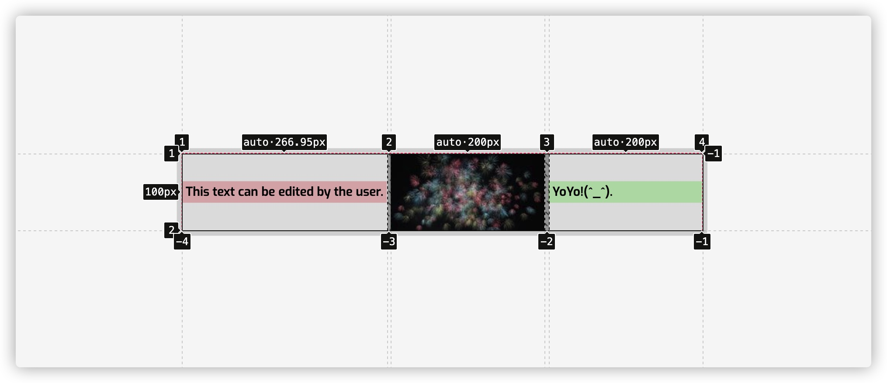
事实上，网格轨道取值为auto，还有很多细节，比如如何分配额外的空间，我们在这不做详细阐述，但可以仔细阅读后面有关于网格轨道尺寸算法相关的章节。
在实际使用的时候，如果你希望网格轨道大小与网格项目内容尺寸相匹配时，就可以使用auto值。而且auto特别适用于文本、图片、SVG和Canvas等元素。
min-content 和 max-content
在《图解CSS: 元素尺寸的设置》一章中，我们了解到：
在CSS中存在两种尺寸：内在尺寸（Intrinsic Size）和外在尺寸（Extrinsic Size）。
元素的width或height设置的固定属性值，就是指外在尺寸；而由元素包含的内容量决定的尺寸就是指内在尺寸。其中，CSS的min-content、max-content和fit-content都是内在尺寸的代表。同样地，在网格轨道尺寸设置中也可以使用这几个内在属性值。
在正式开始介绍min-content和max-content在网格轨道中的含义之间，先花点时间了解这两个属性的含义。
从字面上来理解，min-content指的就是内在的最小尺寸（它有可能是宽或高）：
- 如果指宽度的话，它等于元素内容里最长的那个单词宽度
- 如果指高度的话，它等于元素内容所有行的高度总和（内容有可能会断行）
比如说：
<!-- HTML -->
<h1>CSS is Awesome</h1>
/* CSS */
h1 {
width: min-content;
}
拖动示例中的滑块，会发现h1的width设置为min-content时，不管容器宽度怎么变，它始终都是单词“Awesome”的宽度（当前行最长单词的宽度），而width取值为auto会随着容器宽度变化：
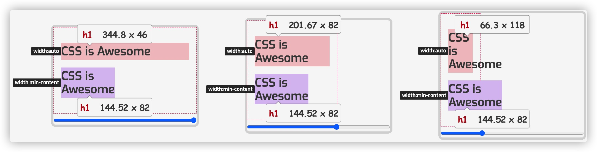
再来看max-content，它表示元素的内在首选宽度（Intrinsic Preferred Width），它等于元素内容的宽度。我们在上面的示例基础上添加max-content的示例：
h1 {
width: max-content;
}
调整示例中滑块，改变.container容器宽度，h1 的 width 分别设置为 auto、min-content 和 max-content值，只有 auto会随容器宽度变化，min-content 和 max-content 并无差异。其中当容器小到一定的时候，h1 的内容会溢出容器：
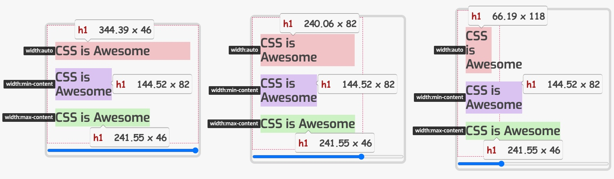
示例中不难发现：
min-content：容器会包含其内容的小最宽度。即，浏览器（客户端）会查看容器内哪一点内容最宽，并将容器的宽度设置为该值。最宽的内容是文本中最长的字（英文中是最长单词，汉文是一个汉字），或最宽的图像，或视频等max-content：容器需要的宽度，以包含其所有的内容。示例中演示的情况，意味着所有的文本都被放在一行上，容器变得尽可能的宽，以包含整行的内容。一般来说，这不是一个理想的效果。最大的内容（max-content）也可能是图像或视频等；在这种情况下，浏览器会使用这个宽度来决定容器的宽度
不过， CSS 中的 white-space 和 hyphens 的取值对于 width 属性取值 min-content 和 max-content 会有一定的影响。比如说，hyphens: auto下，width 取 min-content时，浏览器会在确定最小宽度之前，在正确的连字符点上断开单词； width 取 max-content 并变化。如果在 h1 中设置white-space: nowrap时，min-content 和 max-content 表现一致：
或许你已经猜到了，CSS 网格布局中的 grid-template-columns 和 grid-template-rows 中也可以显式的使用 min-content 和 max-content 来定义网格轨道的尺寸。而且使用方式和前面介绍的px、1fr 和 vw等相同。如：
.container {
grid-template-columns: min-content 1 fr max-content;
}
为了更好的帮助大家理解，min-content 和 max-content 给网格轨道尺寸大小会产生什么样的结果，先从简单的示例开始：
在这个示例中，网格的第一列和第三列网格轨道分别设置的是 min-content 和 max-content，但它们的内容都是相同（“Content”这个单词），这个时候，这两列网格轨道相等，即 min-content 等于 max-content。这是因为这两列的文本内容“Content”长度相等：
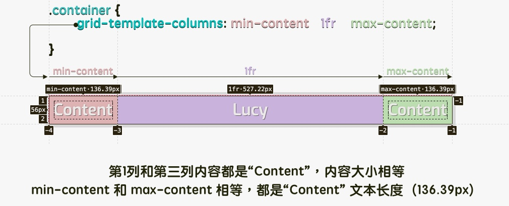
如果我们把上面示例中的第一列和第三我文本内容做出相应的调整（复杂的文本内容），那么使用 min-content 和 max-content 就变得有趣多了。基于上面的示例，在第一列和第三列的 div 元素上添加 contenteditable="true" 属性，用户可以编辑网格项目中的内容：
<!-- HTML -->
<div class="grid__container">
<div class="grid__item" contenteditable="true">This Text can edited by the user.</div>
<div class="grid__item"> Lucy</div>
<div class="grid__item" contenteditable="true">This Text can edited by the user.</div>
</div>
在这里，min-content 使用了文本中 最长的单词 （示例中默认文本的“edited”，调整后的“Awesome!”）宽度作为第一列网格轨道的尺寸；max-content 使用了文本中 所有字符串 宽度作为第三列网格轨道的尺寸：
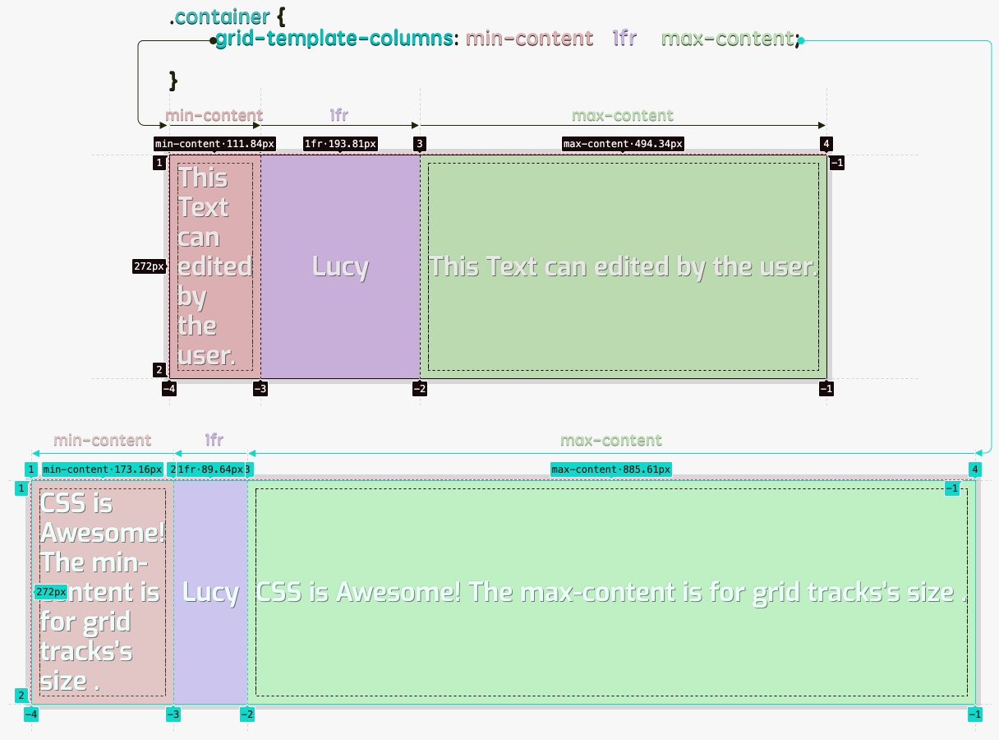
同样的，如果在设置了min-content 或 max-content 网格轨道所在的网格项目中显式设置 white-space: nowrap时，min-content的表现行为和max-content相似；如果显式设置的是hyphens:auto时，min-content的网格列轨道宽度是“在正确的连字符点上断开单词”时的宽度：
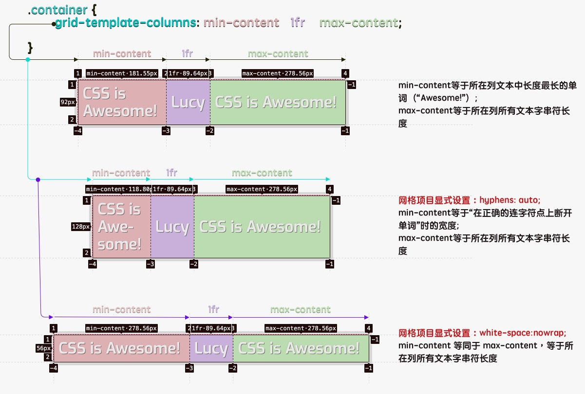
注意，用户输入的文本内容不同，
min-content和max-content表现出来的结果有一定的差异。
在网格轨道尺寸设置中使用max-content，虽然有一定的优势，但也对我们布局带来一定的麻烦，比如说，不人为换行，网格项目中的文本会一直在同一行，有点类似于显式设置了white-space: nowrap，这样一来就会造成网格项目溢出网格容器：
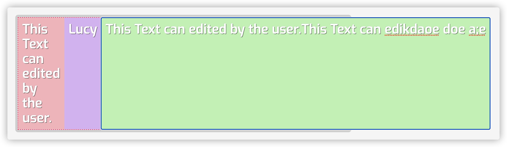
在 Web 中图像是不可或缺的内容，那我们在上面的示例上稍作调整，在第一列和第三列，分别添加一张 300px x 150px的图像。来看看min-content 和 max-content 和 <img> 在网格轨道中会有什么样的表现行为：
从示例的渲染结果不难发现。
当 min-content 同一列网格轨道有“文本”（网格单元格中全是文本），有图像（另一网格单元格是img）：
- 当图像宽度大于所在列单元格中“最长单词”长度时，
min-content等于img的width - 当图像宽度小于或等于所在列单元格中“最长单词”长度时，
min-content等于“最长单词”宽度
当 max-content 同一列网格轨道有“文本”（网格单元格中全是文本），有图像（另一网格单元格是img）：
- 当图像宽度小于所在列单元格中“所有文本字符串”长度时，
max-content等于所在列“所有文本字符串”最长一列的宽度 - 当图像宽度大于或等于所在列单元格中“所有文本字符串”长度时，
max-content等于img的width
为了让大家能看得更清楚，把上面示例中“第一行”的三个单元格去掉，只留下图片：
正如上例所示：
min-content对应的网格列轨道，不管img的width调整到什么值，img都会缩减到0，此时min-content等于0。如果该列没有其他网格单元格，那么该列不可见max-content对应的网格列轨道，不管img的width调整到什么值，max-content等于img的初始宽度，本例中是300px
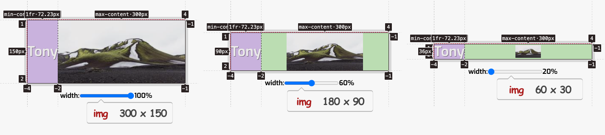
fit-content 和 fit-content()
了解了min-content 和 max-content 之后，我们就可以进入 fit-content 的世界了。它的本质上是下面三个属性简写：
h1 {
width: auto;
min-width: min-content;
max-width: max-content;
}
因此，h1 的大小与它的包含盒子的大小相同，但最小为min-content，最大为max-content。回到前面的 min-content 和 max-content的示例中，在该示例上我们添加fit-content的演示效果：
拖动示例中滑块，改变容器宽度，你会发现 fit-content 的渲染结果同时具备min-content和max-content两个值的特征。
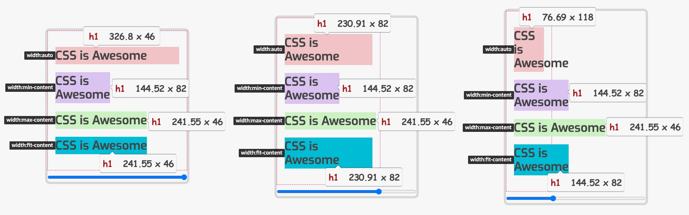
正因为 fit-content 同时具备 min-content 和 max-content 的渲染行为，所以 fit-content 相对而言取值要更为复杂。 Stackoverflow 上有一个优秀的回答，这个回答能帮助我们更好的理解 fit-content 的取值方式：
fit-contentusesmax-content, unlessavailable < max-content, then it usesavailable. Unlessavailable < min-content, then it usesmin-content.
大致的意思就是说： fit-content 默许使用 max-content；如果 available 小于 max-content（available < max-content），那么 fit-content 会取 available 值；如果 available 小于 min-content（available < min-content），那么 fit-content 会取 min-content 值 。
available 是指可用空间（Available Space）。在 CSS 中，可用空间（available）表示盒子被放置的空间，它由所参与的格式化上下文的规则来决定。一个盒子可用的空间通常是一个包含它的块容器（该容器尺寸是个明确大小）或一个无限大小（容器尺寸不确定）：
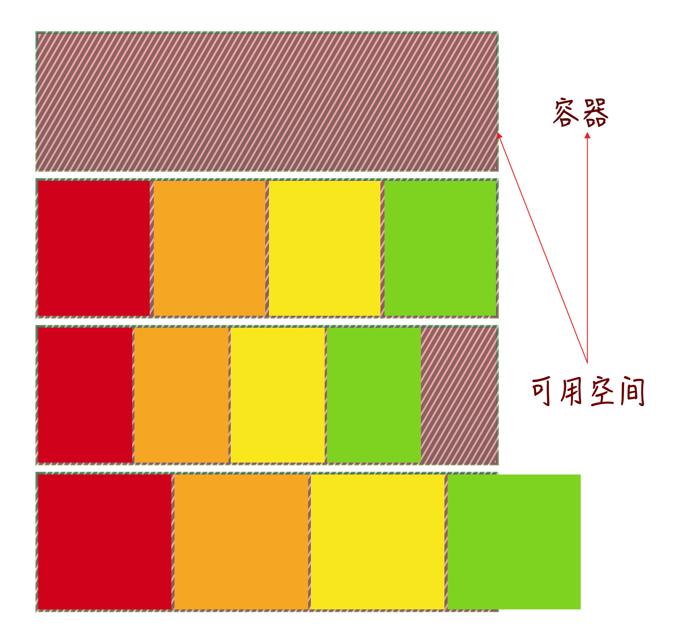
正如上图所示，带斜线的容器有的时候正好可容纳子元素，这个时候可用空间为0，有时候还有剩余空间，这个时候可用空间就是容器宽度减去所有元素宽度和其之间的间距，有的时候子元素宽度和其之间的间距总和会超过容器宽度，内容被溢出，这个时候可用空间是一个负值。可用空间在 Flexbox 和 Grid 布局中非常有用，Flex 项目和 Grid 项目在一起场景中会根据可用空间来进行缩放（拉伸或压缩）。另外，可用空间会受 min-content 和 max-content 约束。
从前面的描述可知，fit-content 的取值和可用空间、min-content 和 max-content。我们可以用一张流程图来描述它们之间的关系：
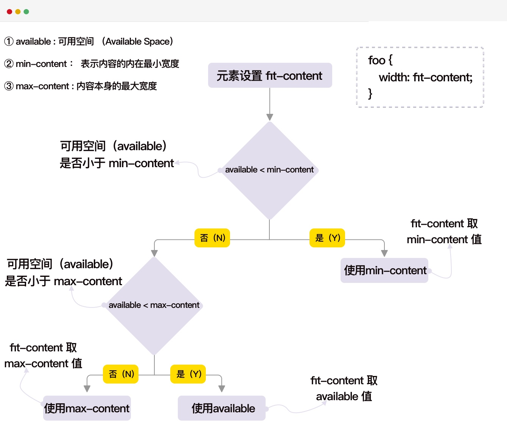
根据流程图，我们可以这样来判断 fit-content 的取值：
- 如果可用空间（
available）充足，那就用max-content，元素容器能容纳 - 如果可用空间（
available）不充足，比max-content小一点点，这样就得用可用空间（available），也不会导致内容溢出 - 如果可用空间（
available）很小，甚至比min-content还小，那就只能用min-content，不然就会导致内容溢出
fit-content 还可以用于 min-width 或 max-width 属性：
- 如果
fit-content用于min-width时，元素的width在min-content和auto之间变化 - 如果
fit-content用于max-width时，元素的width在0和max-content之间变化
比如下面这个示例：
拖动示例中滑块，查看width、max-width、min-width 取 fit-content 时的变化与差异：
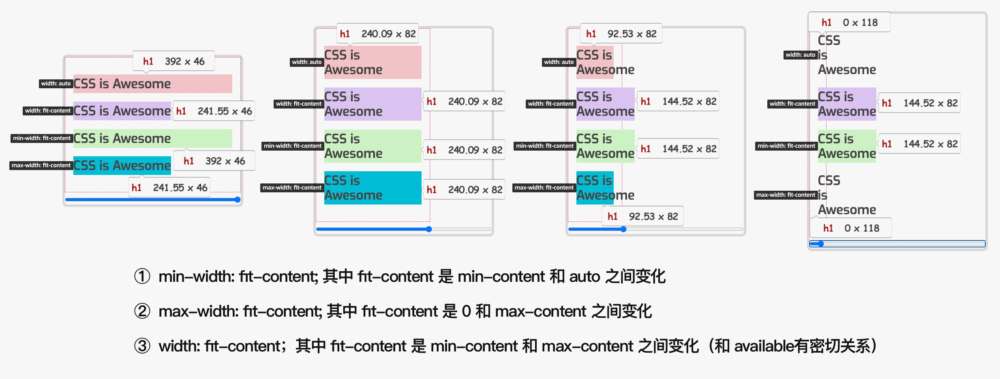
正如上图所示，在 min-width 和 max-width 中设置 fit-content 可能会造成一定的混乱。因为：
min-width按理说是最小宽度，相当于min-contentmax-width按理说是最大宽度，相当于max-content
而事实上呢？min-width 取 fit-content 时，相当于 min-content 和 auto 之间变化；max-width 取 fit-content 时，相当于 max-content 和 0 之间变化。那么怎么变化，fit-content 具体取何值，易于混乱。为此，不建议在 min-width 和 max-width 中使用 fit-content，而只在width 中使用。
回到 CSS 网格布局中，在上面的示例中稍作修改，在 grid-template-columns 属性中设置 fit-content，比如：
.container {
grid-template-columns: auto fit-content fit-content fit-content;
}
使用浏览器开发者工具查看代码，很容易发现 fit-content 用于设置网格轨道尺寸的属性上时无效：
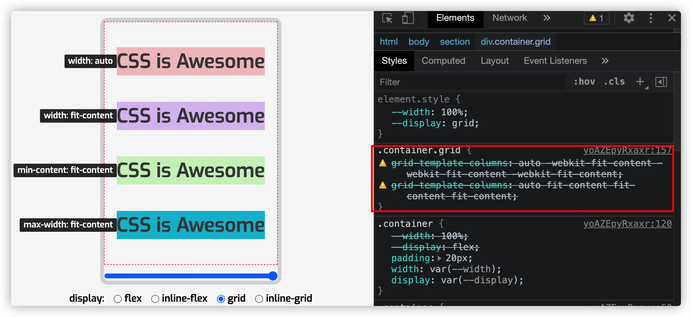
fit-content 除了用于设置网格轨道尺寸的属性上无效时，它用于 Flexbox 中也无效，下面这个示例演示了 fit-content 在 Flexbox 和 Grid 布局的效果：
接着来看 fit-content()，它和fit-content不同，它是一个CSS函数，到目前为止，它不能用于像width这样的属性上，只能用于 CSS 网格布局中。比如：
.container {
grid-template-columns: 1fr fit-content(200px) 1fr;
}
示例中的fit-content(200px) 相当于 min(max-content-size, max(min-content, 200px))。其中：
- ①：
max()函数的参数是min-content（第一个参数） 和200px（第二个参数），而max()函数是会返回两个参数中较大的一个值 - ②：
max()返回回来值会放到min()函数中，即max()返回的值变成了min()函数的第二个值，它会和最大的内容尺寸（max-content-size）进行比较，这是由于网格限制而产生的实际宽度，但最大为max-content。min()函数和max()类似，只不过它返回的是更小的值
因此，fit-content(200px) 用下面这个公式来描述更适合：
fit-content(200px) = min(min(max-content, available-size), max(min-content, 200px))
公式中的available-size 指的是网格中的可用宽度。
除此之外，规范中还提供了另一种公式来描述 fit-content():
fit-content(<length-percentage>) = max(minimum, min(limit, max-content))
其中：
- ①：
minimum代表自动最小值（通常但不总是等于min-content最小值） - ②：
limit是作为参数传给fit-content()参数，即<length-percentage>，比如示例中的200px - ③：
min()返回limit和max-content中更小的值，比如这个示例，min()返回的是200px和max-content更小的一个 - ④：
max()返回是minimum和min(limit, max-content)两个值中更大的一个
如果上面的描述不易于理解的话，我们可以这样来理解。比如示例中的 fit-content(200px)，表示该列网格轨道宽度不会超过 200px，并且可以在内容很短的情况下缩小到 200px 以下。
另外，一般使用fit-content() 函数时，传递给该函数的参数<length-percentage> 一般都是小于元素的 max-content 值。比如fit-content(200px)，其中 200px 是小于元素 max-content 值。在这种情况下，元素最终的渲染尺寸介于min-content 和 200px 之间。具体是多少，还要看当前的可用空间尺寸（available-size），如果可用空间充足，会使用最大的 200px，如果可用空间小，就会取 min-content 到 200px 之间的某个值，如果可用空间不充足（比min-content还小），那就会使用最小值 min-content，不能再小。
当然，如果 fit-content() 函数中的值比元素的 max-content 还大，那么元素最终渲染尺寸介于 min-content 和 max-content 之间。具体是多少还要看当前的可用空间大小，与上面类似。总之，fit-content()返回的最小值是min-content，不能比min-content值更小。
下面这个示例，grid-template-columns 设置不了不同的选项值，其中 fit-content() 也传了不同的值（包括空值）。如果你感兴趣的话，可以拖动示例中的滑块，查看其渲染结果的差异：
如果你尝试着改变 grid-template-columns 的值，你会发现：
fit-content()函数和fit-content是两个不同的东西，其中fit-content用于设置网格轨道尺寸的属性中时不会起任何作用（1fr fit-content 1fr）fit-content()函数需要传一个<length-percentage>类型值，因此示例中没传值（1fr fit-content() 1fr）和传fr单位值（1fr fit-content(2fr) 1fr）都未生效
待续...
虽然在这篇文章主要介绍的是 grid-template-columns 和 grid-template-rows 中使用不同的关键词设置网格轨道尺寸之间的差异。特别是 min-content、max-content 给我们带来的便利之处。另外，fit-content 有强大的特性，但到目前为止，它不能用于 CSS 网格布局中（其实也无法用于 Flexbox布局中）。不过，庆幸的是，在 网格布局中可以使用 fit-content() 函数来设置网格轨道尺寸。在网格布局中除了 fit-content() 函数之外，还有其他一些函数，比如 minmax() 和 repeat()等，也可以用来设置网格轨道尺寸。那么在下一部分，将围绕着这些函数来展开。感兴趣的同学，请持续关注后续的相关更新。